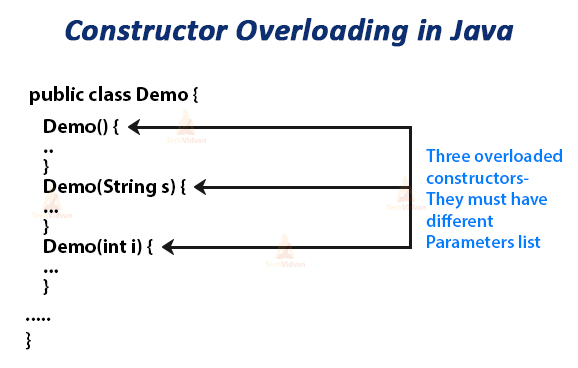
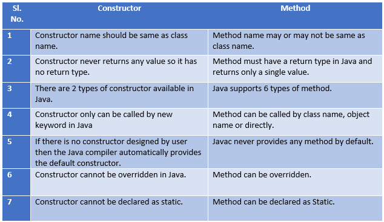

Constructor overloading is a technique in which a class can have any number of constructors that differ in parameter lists.
The compiler differenciates these constructors by taking into account the number of parameters in the list and their type, enabling the programmer to create objects with desired functionality.
For e.g. Vector class has 4 types of constructors. If you do not want to specify the initial capacity and capacity increment then you can simply use default constructor of Vector class like this Vector v = new Vector(); however if you need to specify the capacity and increment then you call the parameterized constructor of Vector class with two int arguments like this: Vector v= new Vector(10, 5).
When do we need constructor overloading?
Sometimes there is a need of initializing an object in different ways. This can be done using constructor overloading. For example, Thread class has 8 types of constructors. If we do not want to specify anything about a thread then we can simply use default constructor of Thread class, however if we need to specify thread name, then we may call the parameterized constructor of Thread class with a String args like this:
Thread t= new Thread (" MyThread ");

Now we see an example of constructor overloading and explain it.
The following code segment contains the definition for a class named Box
class Box
{
int height, depth, length;
Box()
{
height=depth=length=10;
}
Box(int x, int y)
{
height=x;
depth=y;
}
Box(int x, int y, int z)
{
height=x;
depth=y;
length=z;
}
}
class BoxClass
{
public static void main(String args[])
{
Box a= new Box();
System.out.println("Depth of a: "+a.depth);
Box b= new Box(10,15);
System.out.println("Depth of b: "+b.depth);
Box c= new Box(12,15,20);
System.out.println("Depth of c: "+c.depth);
}
}
The class 'Box' contains three different variable height, depth and length as integers. It also has three constructors named Box(). The first constructor Box() is a default constructors since it does not have any parameters but it initializes variable length, height and depth to the value 10.
The second constructor Box() recieves two integers x, y as parameters and assigns x value to height, y value to depth. The third constructor Box() recieves three integers x, y, z as parameters and assigns x value to height, y value to depth, z value to length. In main() class Boxclass an object 'a' for the defined class is created with no parameters passed and it will call the default constructor.
The next statement prints the depth value. The object 'b' is created for the Box class and the values 10, 15 are passed as arguments; it will call the constructor which has two integer values as parameters. Similarly, object 'c' is created for the Box class and the values 12, 15, 20 are passed as arguments; it will call the constructor which holds three integers as parameters. Thus the output of the program is 10,15,15.
Now we can see an another example.
Here we are creating two objects of class StudentData. One is with default constructor and another one using parameterized constructor. Both the constructors have different initialization code, similarly you can create any number of constructors with different-2 initialization codes for different-2 purposes.
class StudentData
{
private int stuID;
private String stuName;
private int stuAge;
StudentData()
{
//Default constructor
stuID = 100;
stuName = "New Student";
stuAge = 18;
}
StudentData(int num1, String str, int num2)
{
//Parameterized constructor
stuID = num1;
stuName = str;
stuAge = num2;
}
//Getter and setter methods
public int getStuID()
{
return stuID;
}
public void setStuID(int stuID)
{
this.stuID = stuID;
}
public String getStuName()
{
return stuName;
}
public void setStuName(String stuName)
{
this.stuName = stuName;
}
public int getStuAge()
{
return stuAge;
}
public void setStuAge(int stuAge)
{
this.stuAge = stuAge;
}
public static void main(String args[])
{
//This object creation would call the default constructor
StudentData myobj = new StudentData();
System.out.println("Student Name is: "+myobj.getStuName());
System.out.println("Student Age is: "+myobj.getStuAge());
System.out.println("Student ID is: "+myobj.getStuID());
/*This object creation would call the parameterized
* constructor StudentData(int, String, int)*/
StudentData myobj2 = new StudentData(555, "Abir", 25);
System.out.println("Student Name is: "+myobj2.getStuName());
System.out.println("Student Age is: "+myobj2.getStuAge());
System.out.println("Student ID is: "+myobj2.getStuID());
}
}
Output-:
Student Name is: New Student
Student Age is: 18
Student ID is: 100
Student Name is: Abir
Student Age is: 25
Student ID is: 555
Difference between Constructor and Method.
